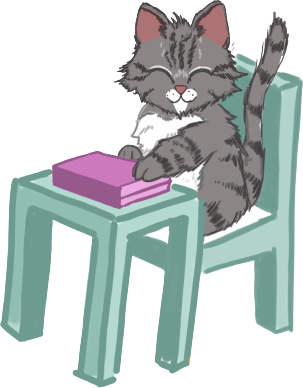

Meet Sally, a digital companion helping you to take breaks from extended screen usage.

While you study, Sally sits in the corner of your screen typing on her own laptop.
After around 20 minutes, your companion will take a break from study, giving a visual cue that you should do the same.
Once you've finished typing your sentence, line of code, or any other time sensitive activity, clicking on Sally will dim your screen to black for 20 seconds.
During this time, it is recommended to look away from your screen at something 20 feet (~6m) in the distance.
After the 20 seconds have passed, your screen will return to your previous activity, allowing you to resume your
study with a lowered risk of experiencing eye strain.
Benefits of Twenty Visual:
- No number counting down reduces stress of feeling like a deadline has to be met.
- Our app doesn't force your screen off after 20 minutes have passed. The user has
full control to start their break when they're ready.
- A digital companion on your main device is more fun and convenient than a mobile based timer.